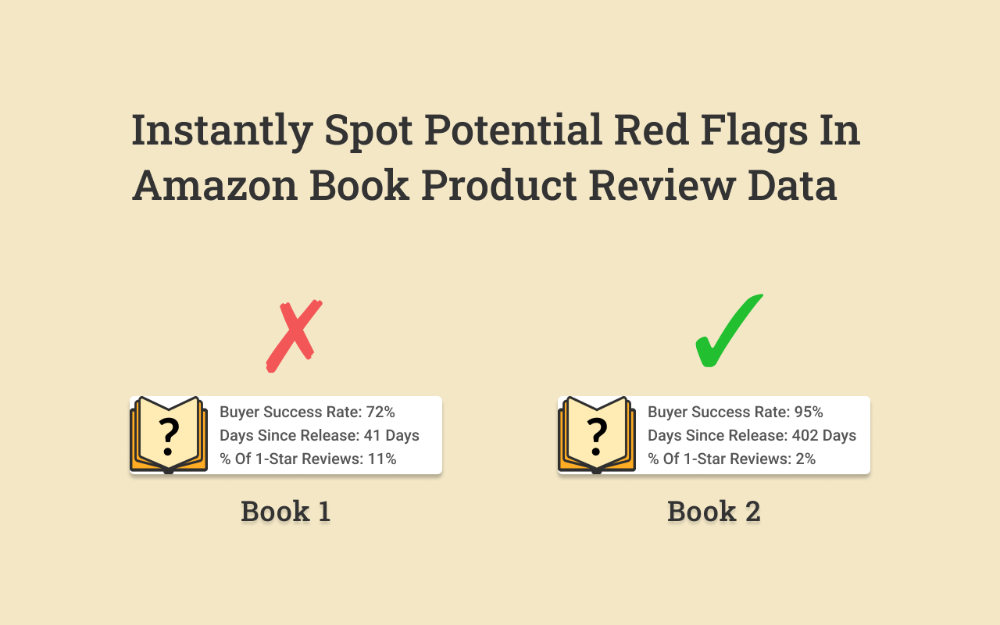

Tired of regretting bad book purchases?
We are too, and after repeating the same process over and over again to filter out potentially bad book purchases, we decided to build a tool that would do this for us instead.
Introducing Is This Book Good, a chrome extension that helps you spot potential red flags in review data for books on Amazon.com and lets you instantly compare ratings of books with different numbers of reviews.

We know it's not possible to "know" if a book is "good" before we read it, but by looking out for negative signals in review data we can help answer this fundamental question: "Is this book good?"
How it works
There are 3 ways Is This Book Good tries to give users more context on how to make book purchasing decisions.
First, we try to correct for a positive bias that currently exists towards books that have high ratings and a low number of reviews.
To address this, we calculate the buyer success rate, which factors in the number of reviews a book has.
We use a simple formula for this called "Rule of Succession". You can read more about this formula here: https://en.wikipedia.org/wiki/Rule_of_succession
Next, we address another source of bias in review ratings: recency.
Since books are more likely to receive favorable reviews when they are new, we bring attention to how long ago the book came out.
Third, and lastly, we try to address the hidden sources of book buyer frustration by bringing attention to the number, specifically the percentage of, 1-star reviews.
What to Expect as a User
First things first, we don't collect any of your data or send any of your data to anywhere else.
Two, the Is This Book Good extension only runs on Amazon.com product pages, and nowhere else. We know a tool is only useful when it shows up at the right time.
Three, our tool goes away when you need it to. Our popup disappears from your page with a single click, so you can keep browsing and shopping like you're used to.
 Next, we address another source of bias in review ratings: recency.
Since books are more likely to receive favorable reviews when they are new, we bring attention to how long ago the book came out.
Next, we address another source of bias in review ratings: recency.
Since books are more likely to receive favorable reviews when they are new, we bring attention to how long ago the book came out.
 Third, and lastly, we try to address the hidden sources of book buyer frustration by bringing attention to the number, specifically the percentage of, 1-star reviews.
Third, and lastly, we try to address the hidden sources of book buyer frustration by bringing attention to the number, specifically the percentage of, 1-star reviews.